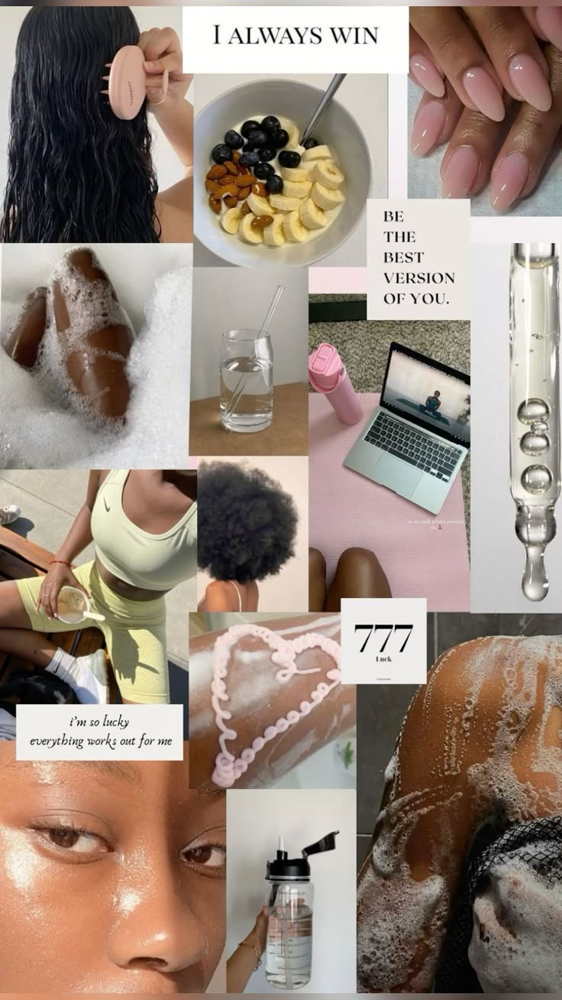

Natural Beauties
Welcome to Natural Beauties; a blog that helps Black women and girls to learn how to love their natural hair and beauty. As the admin of this blog I will introduce myself and my story as young Black women who are learning to love themself.
Ever since I was a little girl I always wore my natural hair. My mom didn’t believe in relaxers because she said I didn’t need it; and have done cute styles on my type 4 hair. Once I started to do my own hair I sometimes felt unconfident because on social media I saw girls with type 3 hair do these cute styles that I can do; but I won’t have the same results due to my hair texture. This sometimes made me frustrated and I manipulated my hair so it can look like the girls I saw on social media. Now I still do those cute styles but I embrace my hair texture instead of fighting against it. I wear less tight styles and now feel confident wearing afros now.
In my blog there will be different categories. The categories are natural hair, self care, fashion and mental health. In the first category I will define what is type 4 hair and show different hairstyles for type 4 hair; and even recommend youtubers who do natural hair content. For the second category it will be selfcare. I will show makeup and skincare tips; and show Black content creators who do makeup and skincare. There will also be a hygiene product recommendation and Black fitness influencer page. The third category will have Black designers and fashion influencers that wear all aesthetics. The last category will show different body types and post sources on how to improve your relationship with your body. There will also be a few websites that help with mental health and an emergency hotline if someone needs help.
My goal for this blog is for Black women and girls to learn how to love themselves and to see that their features are beautiful. From real life to social media Black women and girls are taught to hate themselves and to change their appearance to look more ambiguous. Black women and girls get hate for their hair, features, bodies and even for existing. I want this page to be an escape from reality for Black women and girls. And to show them that they are worthy and are loved.
Natural hair
This is a natural hair chart for type 4 hair
• 4A Hair Type – What is Type 4A Hair?
Type 4A Hair coily has defined curls with a thick texture. It is the size of sidewalk chalk and has a lot of shine. Type 3A benefits from a lot of body and movement. However, it is prone to frizz and dryness.
• 4B Hair Type – What is Type 4B Hair?
Type 4B Hair has tighter curls with a combination of textures. It is made up of well-defined, spiral curls that range from bouncy ringlets to tight corkscrews. It is usually voluminous and has the circumference of a marker.
• 4C Hair Type – What is Type 4C Hair?
Type 4C Hair is as densely packed as 4B but with less definition and more shrinkage. It is tightly coiled and has strands that range from super fine and soft to coarse and wiry. It is also incredibly delicate. It has curls so tight that it may not look even curly at all.
Different natural hair styles for type 4 hair:
Mental health
Mental health is important for Black women and girls. Black women and girls face so much from society. Stereotypes, abuse and Black femicide are some of the things most Black women struggle with. This page is so Black women can get the help they need for their safety and to improve their mental health.
therapyforblackgirls
thewomenscenter
family-institute
Detroit Police Victim’s Assistance Program, available 24/7 at 313-833-1660, can provide assistance.
The National Domestic Violence Hotline, which offers confidential support 24/7, can be reached at 1-800-799-SAFE(7233).
Self care

Self care is important for anyone. Self care can boost self-esteem and mental health.
Skincare/hygiene
Hydrate: Use a moisturizer, toner, and cleanser to keep skin hydrated and prevent fine lines and wrinkles. Look for products with ingredients like hyaluronic acid, glycerin, argan oil, almond oil, coconut oil, or avocado oil.
Protect from the sun:
Use sunscreen with an SPF of 30 or higher every day to prevent dark spots and skin cancer.
Treat irritation:
Address skin irritation as soon as possible.
Use gentle products:
Avoid products with harsh chemicals and fragrances. Use a light cleanser to remove impurities without drying out the skin.
Eat well, sleep well, and drink water:
A healthy diet, enough sleep, and drinking water can help keep skin looking its best.
Treat acne:
Benzoyl peroxide is a common acne treatment that's safe for medium to dark skin tones. However, it can dry out the skin, so you can consult a dermatologist for alternatives.
Use eye cream:
Eye cream can help with dark circles and puffy eyes. Apply a pea-sized amount around the eye and along the orbital bone.
See a dermatologist:
If you have dry skin that doesn't improve, you might have an undiagnosed skin condition like eczema, ichthyosis, or psoriasis. A dermatologist can help you find a treatment plan. You can find a dermatologist who specializes in treating darker skin tones by searching for "Skin of Color" under "Practice Focus" on Find a Dermatologist.
Makeup/beauty
Fitness
Fashion
Black women are know for their fashion! Here are some style inspo: